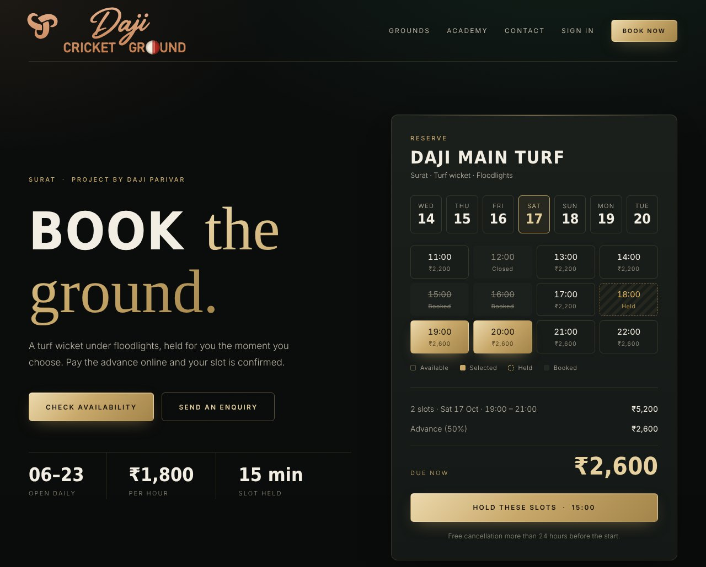
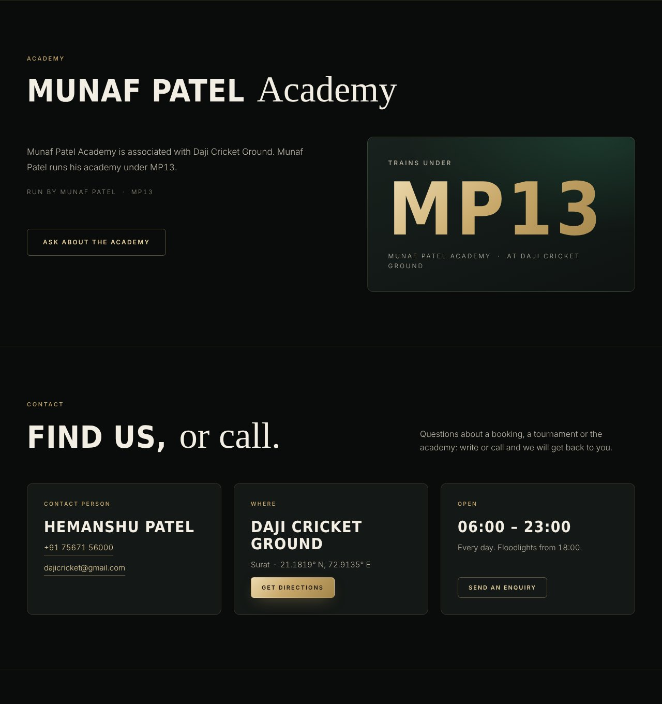

A website you can open and click through today, owner and staff screens, a super-admin console, Contacts, the academy and match scoring, full accounting with bank-statement import and automatic reconciliation, Ask AI, and a page that offers the software to other ground owners. Then the Wix pages, the mobile app and the server setup that remain.
What it does, how the rules work, a flowchart for each journey, how it is built and deployed, and — plainly — what is finished and what is not.
Daji Cricket Ground is a booking platform for cricket grounds. Customers find a ground, pick a date and time and pay an advance. Owners and staff run the grounds from a dashboard, keep their books, and keep in touch with everyone who has played. The super admin controls the global payment switch and platform settings. Your public website stays on Wix; the booking engine runs on its own server and appears inside your Wix pages.
| Decision | Choice |
|---|---|
| Scope | Customer website, mobile app and a backend API, plus owner, staff and admin screens |
| Website | Wix at dajicricket.com. Booking, account and accounting screens are added to Wix pages as custom elements (the same screens already run as a standalone site, section 16) loaded from api.dajicricket.com (section 11) |
| Mobile | Expo (React Native), one codebase for iOS and Android |
| Business model | Multiple independent ground owners; each owner sees only their own data |
| Payments | Razorpay (test mode first) and direct UPI/QR, with one global Razorpay ON/OFF switch and manual verification of UPI payments by staff |
| Backend | Node.js and TypeScript. No C#/.NET is written; .NET terms in your requests (Hangfire, Mapster, Respawn, xUnit, EF Core) were mapped to Node equivalents (section 11) |
| Look | "Obsidian & Champagne": near-black with champagne-gold, taken from the copper sign at the ground. Your logo with its glow removed, flat, so it sits cleanly on the page background (section 10) |
| How it is delivered | Rebuilt in stages; a zip after each stage |
| Name | Daji Cricket Ground |
| Tagline | Project by Daji Parivar |
| Contact person | Hemanshu Patel |
| Phone | 7567156000 |
| dajicricket@gmail.com | |
| Where | Surat (worked out from the map location: 21.1818855° N, 72.9134859° E). Map link: https://maps.app.goo.gl/Qs2Wivwv76jt9zjG7 |
| Academy | MP13 Academy, associated with Daji Cricket Ground. Munaf Patel runs his academy under MP13 |
| Website | dajicricket.com |
The contact person, phone, email and academy details are global settings that the super admin can change, so a change is made once and follows everywhere. Each ground also holds its own Google Maps link, which the server checks is a real Google Maps address before saving it.
| Role | Can do | Cannot do |
|---|---|---|
| Customer | Search grounds, see availability, book and pay, cancel, use account credit, send enquiries, view history, set marketing consent per channel (email, SMS, WhatsApp) | See anyone else's data |
| Ground owner | Manage own grounds, prices, hours and blocks; see bookings, payments, customers, enquiries; Contacts and updates; Reports and the books; Ask AI; add staff and choose their permissions | See another owner's data (the API answers "not found") |
| Staff | Only what the owner grants (table below) | Anything not in their permission list |
| Super admin | Manage users, roles and permissions; the global Razorpay switch and platform settings (including the contact and academy details); platform-wide reports; audit logs. To look at one owner's books or ask Ask AI about them, the admin picks the owner first | — |
| Permission | Allows |
|---|---|
manage_bookings | View and change bookings, cancel, mark no-shows, create walk-in bookings |
verify_payments | Confirm or reject direct UPI payments; a UPI booking cannot be confirmed without this |
record_payments | Record cash, card, UPI or bank-transfer payments taken in person; mark manual refunds paid |
manage_enquiries | Review enquiries, add notes, send quotations, convert to bookings |
manage_grounds | Edit ground details, prices, hours; block slots |
view_customers | See customer records and history, and open the Contacts list and its export |
send_broadcasts | Preview and send email, SMS or WhatsApp updates from Contacts and see their history |
view_reports | Read the Reports tab: Profit and Loss, Balance Sheet, Future and Past schedule |
manage_accounting | Everything in the books: accounts, transactions, categories, journals, month sign-off (also reads the reports) |
view_reports or manage_accounting; about bookings, manage_bookings or view_reports; about customers, view_customers. If you may not see it, Ask AI says which permission is missing instead of answering.| Ref | Area | What it does |
|---|---|---|
| FR-01 | Ground listing and search | Name, location and map link, photos, facilities, prices and live availability by date and time |
| FR-01a | Sign-up and sign-in | Create an account with a mobile number and a one-time code (OTP), or with an email and password. First and last names start with a capital letter and can be corrected by the owner or admin. Codes are sent through an SMS provider once one is connected. |
| FR-02 | Availability and booking | Pick ground, date, one or more consecutive slots. Slots are held while you pay. A booking is confirmed only after payment is verified. Double booking is blocked in the database itself, not just in the screens |
| FR-02a | Ways to play | The customer picks a ball (red, white or tennis) and a match length, such as T20 (3.5 hours), 40 overs (7 hours) or a 4-hour match (9-1, 1-5). Sessions run back to back from opening time; the whole session is held and priced as one booking. |
| FR-02c | Price list | Each ground has an editable price list for the leather ball, the tennis ball and practice sessions: fixed sessions (e.g. 10 am to 6 pm for one price), by-the-hour prices (e.g. 7 pm to 3 am), two-day tournaments, closed days (every Monday) and a "call for custom days" message. Owners and the super admin edit it in plain screens with a week-at-a-glance preview. |
| FR-02d | Part-sessions today | A fixed session that has already started today is still sold if the hours left are free, for that share of the price rounded up to the next ₹50 (for example a ₹7,000 day session with 5 of 8 hours left costs ₹4,400). A booking blocks only its own hours, so a two-day tournament leaves the late-night slots open. |
| FR-02e | Owner approval | Every online booking waits for an owner to approve it. The deposit holds the slot and the customer sees "Pending approval" in their dashboard until it is approved. Owners see a "Waiting for your approval" list with Approve and Decline. |
| FR-02f | Cancelling and refunds | A customer who cancels in time chooses: refund to the original payment method of 50% of what was paid, or the full amount as account credit for future bookings. When the ground cancels, the owner must write an explanation; the customer then chooses a full refund, the full amount as credit, or another slot. |
| FR-02h | Promo codes | Owners and the super admin build discount codes: typed by hand or generated (including one-time codes). Each takes a percentage (with a cap) or a rupee amount off, with optional minimum, dates and use limits. Customers enter the code when booking and see the saving before they pay. |
| FR-02i | Booking window and closed days | The owner or super admin sets the first day customers can book (14 Nov 2026) and a closing day (1 Jun 2027), and can switch off single days for the ground, practice nets or academy. Staff can still book closed days by hand. |
| FR-02j | Repeating bookings | A customer can repeat a booking daily, weekly, monthly or yearly (up to 60, 52, 12 or 3 times). The first date is paid as usual and the rest are reserved and confirmed with it; closed or taken dates are skipped and listed, and unpaid repeats can be cancelled in one step. |
| FR-02k | Auto-debit | Off until the owner switches it on. A customer approves their bank once (UPI AutoPay through Razorpay) and the balance of each booking is charged a set number of hours before it starts. Failed charges are retried three times and the customer is told. Needs Recurring Payments on the Razorpay account. |
| FR-02l | Tasks with camera proof | The owner gives staff tasks. Staff close a task with photos taken on the spot; a photo is refused unless its camera time is within the last 5 minutes, so old or forwarded pictures cannot be used. |
| FR-02m | Email through Gmail | Messages go out from dajicricket@gmail.com using a Google App Password; they wait in a queue until it is set. |
| FR-02n | Coach screens in the app | Staff with the academy and matches permissions mark attendance, keep the student list, write and publish monthly report cards, and score matches ball by ball from the phone. |
| FR-02i | Terms and conditions | A terms page covers booking approval, customer cancellation, ground cancellation and weather. When the ground cancels, the owner chooses which of full refund, 50% refund or credit the customer is offered. |
| FR-03a | Roles | The software owner (super admin) sees everything and can look at any owner's bookings and accounting. An owner runs their own ground. An Admin, added by the owner, has fewer rights than the owner: day-to-day work and reading reports, but not the books, prices, promo codes, team or settings. |
| FR-03b | Desk pages and profile | Every desk tab and sub-page has its own address. A round profile button at the top right shows the person's initial or chosen picture and opens their profile (name, email, mobile, picture, password, sign out). Owners, staff and admin sign in with email or mobile number. |
| FR-03c | Services and connections | A notebook of every outside service (WhatsApp, MSG91, Razorpay, Expo, Wix, domain, hosting, Claude) with the email and phone each account was opened with, plus a Connections list that shows what each service still needs and tests it. New services plug into the same list. |
| FR-02g | Push notifications | The mobile app alerts owners and staff when a booking needs approval or a customer cancels, and alerts customers when a booking is approved or the ground cancels. |
| FR-01b | Sign-in codes | Codes are sent by WhatsApp first, with MSG91 text message as the backup. |
| FR-02b | Coaching staff | The academy lists its coaches (name, title, short bio, photo), edited by academy staff and shown on the website. |
| FR-03 | Payments | Razorpay, direct UPI/QR and offline (cash, card, bank transfer). Amount, method, status, reference and who verified are stored with a history of every change |
| FR-04 | Global payment switch | Super admin turns Razorpay ON or OFF once; website and apps follow immediately. OFF means UPI ID or QR with staff verification |
| FR-05 | Advance and expiry | Configurable advance (fixed or percent) and hold deadlines. Unpaid holds are released only after checking for pending or late payments. Every expiry, release and status change is audited |
| FR-06 | Cancellation and credit | More than 24 hours before start: free cancellation. Inside 24 hours: the paid amount becomes account credit (100 percent by default). No-show: nothing back. Every credit issue, use, adjustment and expiry is in a ledger |
| FR-07 | Enquiries and quotations | Customers ask; staff follow up, send a quotation and convert to a booking or close it |
| FR-08 | Customers and consent | Profiles, histories, and separate optional marketing consent for email, SMS and WhatsApp. Booking and payment messages do not depend on marketing consent |
| FR-09 | Notifications | Booking, payment, hold expiry, cancellation, credit and enquiry messages are recorded and sent through a provider interface (section 14 says what is not connected) |
| FR-10 | Owner and staff dashboard | Grounds, prices, hours, bookings, walk-ins, offline payments, UPI verification, enquiries, customers |
| FR-11 | Super admin dashboard | Users, roles, global settings, platform reports, audit log |
| Added | Contacts | Everyone who has played, with filters; a preview-then-send email, WhatsApp or SMS update with a consent check on every person; history; one-click unsubscribe for email; CSV export (section 7) |
| Added | Reports | Profit and Loss, Balance Sheet, Trial balance, general ledger, Future schedule and Past schedule, all from one set of books, each exportable to PDF, Excel and CSV (section 8) |
| Added | Accounting | Bank and cash accounts, transactions, categories, manual journals, month-end sign-off. Statement import, receipts, reconciliation and recurring entries are built (section 18); the live bank feed is not |
| Added | Academy and match day | Batches, students, attendance, fees and progress with a parent view; live scoring ball by ball and a public Live scores page (section 17) |
| Added | Platform page | "For ground owners": the software offered to other owners, with an enquiry form and a leads list for the super admin (section 20) |
| Added | Ask AI | Type a question in plain words ("revenue for the past 37 days", "what's the account balance") and get an answer from your own books, with the exact dates used (section 9) |
The SRS leaves several decisions open (its section 10). The values below are the defaults used so the system can run; every one is a setting the super admin can change, and every one needs your confirmation before launch.
| Decision | Default used | Notes |
|---|---|---|
| Advance payment | 50 percent of the booking total | Fixed amount or percent, global with a per-ground override. Full payment required when the booking starts within 24 hours |
| Hold time (online) | 15 minutes | Slots are held while the customer pays |
| Hold time (UPI) | 15 minutes to pay and submit the UTR, then 120 minutes for staff to verify | Staff verify by matching the UTR to the bank credit |
| Grace for late payments | 10 minutes, at most 2 extensions | A payment still pending at expiry extends the hold once per extension and flags the booking for staff review |
| 24-hour boundary | Exclusive: exactly 24 hours before start counts as "within 24 hours" | Measured from the scheduled start |
| Credit amount on late cancellation | 100 percent of what was paid | Lower it to keep a late-cancel fee; the part kept is recorded as income on the cancellation day |
| Credit expiry | 90 days | Oldest-expiring credit is used first. Expired credit is written off to income in the books |
| Refunds on free cancellation | Razorpay: automatic to the original method. UPI, cash: staff pay out and record the reference | The customer may choose credit instead of a refund |
| No-show | No refund, no credit | Staff mark it after a 30 minute grace period; the advance is kept as income |
| GST | Treated as inside the booking price; the owner sets the percent (0 to 28) in the accounting settings | The GST inside each played booking is shown as "GST payable" and left out of income. Confirm that your prices include GST |
| Communications providers | Not chosen | Messages are recorded; real sending needs your email, SMS and WhatsApp providers |
| Privacy policy, terms, invoice format | Not written | These still need your text |
A hold is never released just because its timer ran out: the system first looks for a pending or late payment. A late payment either re-confirms the booking or is refunded.
| Payment found at the deadline | Action | Booking becomes |
|---|---|---|
| Captured or verified | Confirm the booking | confirmed |
| Pending or submitted, grace and extensions left | Extend the hold by the grace period (10 minutes), flag for staff review | held, flagged |
| None, or pending with extensions used up | Release the slots, notify the customer | expired |
| Arrives later, slots still free | Re-confirm the booking | confirmed |
| Arrives later, slots taken | Refund automatically and mark the payment late | expired |
The Contacts tab lists everyone who has played at your grounds and lets you send them an update — a closed day, rain, new timings, a price change, a new facility, a tournament or academy news — by email, WhatsApp or SMS. These are marketing-style messages to customers, so each person's own consent for each channel is checked before anything is sent.
| Item | Detail |
|---|---|
| Who counts as "played" | A booking that is completed, or confirmed and already finished. You can also list "everyone who booked" or everyone including no-shows |
| Each person | Name, phone, email, times played, slots, total paid, first and last session, grounds played at, and which channels they have agreed to |
| Filters | Ground, played between two dates, played at least N times, not played since a date, name or contact search |
| Templates | Ground closed, rain update, new timings, price change, new facility, tournament and academy. {name} becomes each person's first name |
| Message limits | Email: subject of at least 3 characters and a body of at least 10. WhatsApp: 10 to 900 characters. SMS: 10 to 300 characters |
| Safety checks | You must preview first and confirm the exact number of people; if the audience changed, you are asked to preview again. At most 10 updates per owner in 24 hours, so a mistake or a stolen login cannot spam the whole list. Sending the same request twice sends nothing twice |
| Audience size | Up to 5,000 people in one update |
| History | Every update: channel, text, who it was aimed at, how many were queued, and each person's status or the reason they were skipped |
| Export | The contact list as a spreadsheet file |
| Stopping | Every email carries a link to stop that channel. The link opens a confirmation button first (so mail scanners that "click" links cannot unsubscribe people by accident). Customers can also switch each channel on or off in their account |
Every figure in Reports comes from one set of books that is worked out on demand from the real records: bank and cash transactions, booking payments, refunds, account credit, the bookings themselves, and any journal entries an owner types in. Nothing is stored twice, and every entry has equal debits and credits, so the reports cannot disagree with each other: the Balance Sheet always balances (assets equal liabilities plus equity), and the Future and Past schedules tie to the Profit and Loss and the Balance Sheet.
A customer's advance is not income when it arrives: it is money held for a session not yet played. It becomes income on the play date.
The Books tab is laid out like a bookkeeper's workspace: a side menu, a + New menu for adding things, an overview of cards, a Bank transactions page with account cards and Pending / Posted tabs, a Books review page, and a Reports list with favourites. Every report has a Print button and an Export menu (PDF, Excel, CSV). Added reports: profit and loss by month and by quarter, customer balances with aging, audit log, general ledger.
| Report | What it shows |
|---|---|
| Profit and Loss | Income and expenses for a month or any dates (up to two years). Accrual basis by default: a session is income on the day it is played. Cash basis is available too. Optionally compared with the previous period. Bookings income is shown without GST; advances kept on no-shows and late cancellations, and credit that expired, are shown separately |
| Balance Sheet | As at any date: cash and bank, money online and by UPI not yet in the bank, booking balances customers owe you, equipment, then what you owe — customer advances for sessions not yet played, account credit owed to customers, refunds owed, GST payable, bills, loans — and owner equity. Unreviewed bank lines sit under "Needs attention" until categorised |
| Trial balance and ledger | Every account with its debit and credit totals, and a line-by-line ledger for any one account for any dates, with where each line came from |
| Future schedule | Confirmed bookings still to be played (a session in progress is flagged), unpaid holds, how much of the money is already held as advances, credit outstanding, and refunds owed. Grouped by day, week (Monday to Sunday) or month, and by ground. Defaults to today and the next 90 days |
| Past schedule | Sessions played and no-shows by play date, and cancellations by the day they were cancelled, with the money each earned: collected, still outstanding, advances kept, cancellations credited, refunded or kept, and credit that expired. The earned money is read from the same books, so it ties to the Profit and Loss. Defaults to the last 30 days |
view_reports or manage_accounting; change with manage_accounting.Described in section 18. Statement upload (CSV and Excel), de-duplication, categorising rules, automatic UTR matching of UPI money against the bank, receipt attachments and recurring entries are working. The live bank feed through Yodlee is not.
A question box inside the software for quick information you would otherwise open a report to find. Examples it understands today: "What was the revenue for the past 37 days?", "What's the account balance?", "Profit this month compared with last month", "Who owes us money?", "What's booked for the next 7 days?", "How many no-shows last week?", "GST this financial year".
| Point | Detail |
|---|---|
| Same numbers as Reports | The built-in answerer calls the same code as the Reports tab. For example the revenue for the past 37 days equals the Profit and Loss for those 37 dates, and the answer says "18 Sep to 24 Oct 2026" so you can see exactly what was used |
| Says what it assumed | No dates given: it says which period it used. Revenue and money received are different things and the answer says which it gave ("money received" counts cash and advances, "revenue" counts sessions played) |
| Reading dates | "Past 37 days" is 37 days ending today, including today. "Last month" is the previous calendar month; weeks run Monday to Sunday; "financial year" is April to March; day/month/year is read the Indian way; "since 1 September" runs to today; "all time" starts on the first day anything was recorded. Dates that have not happened are explained, with what is booked instead. Impossible dates (such as 31 February) are explained, not guessed |
| Topics | Revenue, expenses, profit, the whole Profit and Loss (with comparison), money received, bank and cash balances (today or on an earlier date), Balance Sheet, GST, uncategorised transactions, bookings, upcoming sessions (with who and what is still to collect), money owed, payments awaiting verification, no-shows, cancellations, utilisation, account credit, refunds, customers, and a named ground ("at the nets") |
| When it cannot read a question | It says so and shows examples; it never guesses a number |
| Open the report | Each answer says which report to open for the full picture |
If you add an Anthropic API key, questions the built-in answerer cannot read are passed to Claude, which looks things up using a fixed set of read-only tools on your own books. This is off until you add a key. The built-in answerer is the default and never leaves the server.
| Safeguard | Detail |
|---|---|
| Read-only, your books only | The tools only read; they are limited to the owner whose books are being asked about and to what the asker may see |
| No personal details leave | Customer names, phone numbers and email addresses are never sent. Email addresses and phone numbers typed into the question are replaced before sending. Sessions are identified only by booking reference |
| Amounts are checked | Every rupee amount in Claude's reply must match an amount the tools returned. If one does not, the answer is marked "not fully verified" with the amounts to double-check |
| Bounded | At most 6 look-ups per question and a time limit; if Claude fails, times out or is unreachable, the built-in answerer answers instead |
| Fair use | 30 questions per person per hour (a setting); the question text (shortened) is logged for audit, the answer is not |
"Obsidian & Champagne": a near-black canvas with a faint green, champagne-gold lines and accents, warm ivory text, and bronze from the copper sign at the ground. The lettering follows the sign: a flowing brush script for "Daji" and for accent words, bold condensed capitals for "CRICKET GROUND" and headings, and a quiet sans-serif for everything you read or add up. The O in GROUND is the half-red, half-white cricket ball. An ivory (light) version of the same palette is built in for printing and for people who prefer a light screen.

Design preview of the booking screen. The preview uses stand-in fonts because the web fonts could not be downloaded here; the real screens use the brush script and condensed capitals.

Academy and Contact sections: MP13 Academy (its own page) under MP13, the contact person, phone, email and the Get Directions button.
Your logo is used as the flat, clean mark with the backlit glow removed, so it sits directly on the page background with nothing around it. There are flat variants for different backgrounds; the copper one matches the sign.
Wix cannot run this project's Node server, and the booking guarantee (the database refuses two bookings for the same ground and slot, even if the application is wrong) and the accounting work (reading uploaded bank files, calling Yodlee) need a real database and server. So the system is split in two: Wix keeps the public pages (home, grounds, gallery, contact, academy), which Google can read, and the booking, account and accounting screens are added to Wix pages as custom elements loaded from api.dajicricket.com. The Expo app and the Razorpay webhooks talk to the same address.
| Part | Choice |
|---|---|
| Backend | Node.js 22 with TypeScript, using only what ships with Node (node:http, node:sqlite, node:test). No outside packages, because the package registry cannot be reached from the build environment |
| Database | SQLite file with a daily backup (section 21), 39 tables. A Postgres migration set is planned for when the platform outgrows one server |
| Website | Wix pages plus custom-element widgets (booking, my account, accounting with Contacts, Reports and Ask AI), built in the new look. The screens themselves already exist as plain HTML, CSS and JavaScript served by the server, and are what the widgets will wrap |
| Mobile | Expo (React Native). Source will be written here, but Expo cannot be installed in the build environment, so the app cannot be built or run here (section 14) |
| Shared code | One package of types, money helpers and brand tokens used by the API, widgets and app, so all three agree on every field |
| Hosting | A small server running Docker and Caddy for automatic HTTPS, reachable at api.dajicricket.com (a DNS record added in Wix) |
| Errors | Every error has the same shape: a code, a message and, for bad input, the list of fields at fault |
| Need | Detail (from Wix's documentation) |
|---|---|
| Plan | Custom elements on a live site need a Premium plan, a connected custom domain and no Wix ads |
| HTTPS | Externally hosted custom elements need HTTPS for the script and the API |
| Editor and preview | In the editor and preview a custom element runs from a different address than on the live site, so the server's allow-list may need that address added. The first blocked address is logged so it can be copied in |
| SEO | Keep the real text on native Wix elements; Google may not read text inside a custom element |
| DNS | Wix Domains, Manage DNS Records: add host api pointing at the server. Changes can take up to 48 hours |
| You asked for | What is used instead |
|---|---|
| Hangfire nightly jobs | A scheduled sweep inside the server (hold expiry, credit expiry, reminders, recurring entries, daily backup; bank sync once Yodlee is added) |
| Mapster mapping | Plain mapper functions from database rows to API shapes |
| Respawn database reset | A test helper that resets the database before each test |
| xUnit collections | One database per test file, run in parallel processes |
| EF Core migrations | Versioned schema steps in the server; generated Postgres SQL (up and down) later |
If you later want a C# version, say so and it can be done as a separate piece.
| Table | Holds |
|---|---|
| users | Customers, owners, staff, super admins; permissions; marketing consent per channel |
| grounds | Details, map link, facilities, hours, slot length, prices (weekday, weekend, evening surcharge), advance override |
| bookings, booking_slots | Bookings and their status; one row per held or booked slot with a unique key on ground plus slot start |
| payments, payment_events, refunds | Every payment with method and status, its full history, and every refund |
| credit_lots, credit_ledger | Credit lots with expiry, and the ledger of every change |
| enquiries, enquiry_notes, quotations | Enquiry status, contact notes and quotations |
| notifications | Every message with channel, category and whether it was sent, queued or skipped |
| broadcasts, broadcast_recipients | Each update sent from Contacts, who it was aimed at, who was queued and who was skipped and why |
| audit_log | Who did what and when: booking, payment, cancellation, credit, settings, exports, consent changes, Ask AI questions |
| settings, webhook_events | Global settings (including the contact and academy details); payment webhooks already processed (so a repeat is ignored) |
| Accounting tables | Bank and cash accounts, transactions, categories, rules, journals and their lines, month sign-offs and memos, attachments, statement imports, recurring entries; with soft delete and audit columns |
| Academy, matches, leads, mfa | Batches, students, attendance, fees, progress; matches and every ball; platform leads; authenticator secrets |
| # | Step |
|---|---|
| 1 | Get a small server with a fixed IP address and Docker. In Wix Domains, Manage DNS Records, add an A record for host api pointing to that IP (Wix keeps dajicricket.com itself) |
| 2 | Set the environment: PUBLIC_URL=https://dajicricket.com, API_URL=https://api.dajicricket.com, a long random JWT_SECRET, TRUST_PROXY=1, CORS_ORIGINS listing https://dajicricket.com, https://www.dajicricket.com and the Wix editor address when known. Leave demo mode off |
| 3 | Start with Docker Compose; Caddy gets the HTTPS certificate by itself. Check https://api.dajicricket.com/api/health answers |
| 4 | Create the first super admin with the create-admin script (password typed at a prompt, at least 12 characters) |
| 5 | Wix: upgrade to a Premium plan with the domain connected; add each custom element (Add, Embed code, Custom element, Server URL https://api.dajicricket.com/embed/daji-widgets.js) on its own page; apply the brand colours and fonts |
| 6 | Razorpay: add keys in test mode; set the webhook to https://api.dajicricket.com/api/webhooks/razorpay with events payment.authorized, payment.captured, payment.failed, order.paid, refund.processed, refund.failed |
| 7 | Each owner enters their own UPI ID; the super admin sets the global Razorpay switch and checks the contact and academy details |
| 8 | Optional: add ANTHROPIC_API_KEY to switch on Claude for Ask AI (settings AI_MODE, AI_MODEL, AI_LIMIT_PER_HOUR, AI_TIMEOUT_MS) |
| 9 | Backups run daily at 03:15 India time (section 21). Copy the backups folder off the server as well; restore steps go in the deployment guide |
This is the honest list. "Verified" means it was run, not just written.
| Item | Status | Detail |
|---|---|---|
| Booking, payments, cancellation, credit, expiry, enquiries, staff and roles | Tested | 319 automated tests pass in about two minutes, including permissions, owner isolation, rate limits and configuration rules |
| Contacts and updates | Tested | Filters, consent per channel, preview, confirm count, daily limit, repeat protection, history and unsubscribe are tested. Delivery is not (no provider) |
| Books, Profit and Loss, Balance Sheet, schedules | Tested | Tested on a scenario with played, owing, no-show, late-cancelled, free-cancelled, future and other-owner bookings: the Balance Sheet balances and the schedules tie to the Profit and Loss. Not tested on real books from your ground |
| PDF, Excel and CSV exports | Partly | Read back by the automated tests; PDFs checked for content. Opening and recalculating the Excel files in LibreOffice or Excel has not been repeated |
| Ask AI, built-in answerer | Tested | 35 tests: dates, topics, permissions, owner isolation, rate limit, audit |
| Ask AI with Claude | Not run | Tested only against a stand-in server that behaves like the published interface; never against the real service |
| Website, owner desk, Books, Academy, Live scores, platform page | Run | Opened in a real browser against the real server and clicked through, and again in the hosted preview with sample data. Contacts has no full screen yet |
| Bank-statement import and reconciliation | Fixtures only | Tested on generated statements, not on your bank's real layout. PDF statements are deliberately not read |
| Backups, encryption at rest | Tested | Snapshot, clean-up, encrypted snapshots, restore with the right and wrong passphrase, and sealed fields are tested. A restore on a new server has not been rehearsed |
| "Reply STOP" on SMS and WhatsApp | Gap | The message says it, but replies are not read yet (section 7) |
| Wix widgets | Test page only | Nine widgets (booking, account, owner desk, scores, grounds, gallery, academy, contact, platform) were embedded in a plain page on another address and used. Not inside Wix itself; no Wix account here. |
| Wix site | Not run | No Wix account here: nothing has been run on a real Wix site, the editor and preview addresses are not known for certain, and Wix's font library has not been checked |
| Docker image and HTTPS through Caddy | Not run | There is no Docker daemon in the build environment. The files will be written and checked by reading, not by building |
| Real Razorpay | Not run | Only the built-in demo gateway and hand-signed webhooks can be tested here |
| Bank feed pipeline | Tested | Pulled transactions go through the same import as a statement (no duplicates, rules, UPI matching, locked months). Tested with the demo feed and a stand-in Yodlee server that checks the signed token |
| Real Yodlee | Not run | No Yodlee account here. The connect-your-bank step (FastLink) is not built; the bank is linked in Yodlee and its id is entered in the books |
| Real bank statements | Not run | Send two or three redacted CSV or Excel statements and the column matching can be tuned. PDF statements are not read; ask your bank for CSV or Excel |
| Email, SMS, WhatsApp, push | Not connected | Messages are recorded with the right category and consent check; nothing is actually sent until providers are configured (broadcasts stay "queued") |
| Logo and fonts | Approximate | The wordmark was traced from the drawing; the headings use similar fonts, not the sign painter's |
| Expo app | Not run | The source is written (sign in, book and pay, dashboard with the Ground/Academy toggle, Ask AI, owner desk) but Expo could not be installed here, so it was never run on a phone or simulator |
Besides the API, the server now serves a complete website built in the Obsidian & Champagne look. It runs on its own today (on your laptop or any server) and is the same set of screens that will be placed inside Wix. A hosted preview with sample data was also published so the screens can be clicked through without installing anything; nothing done there is saved.
| Screen | What it does |
|---|---|
| Home and booking | Hero, ground picker, a date strip and a date box that reaches up to a year ahead, slot grid with live availability, price summary. Choosing slots and pressing Hold or Book now takes a visitor who is not signed in to the sign-in / create account page and then straight back to the booking |
| Grounds, Gallery, Academy, Contact | Ground cards with facilities and prices; a photo gallery and Instagram buttons that appear once links are added in the admin desk; the Academy section (Munaf Patel Academy, MP13); contact person, phone, email and Get Directions |
| Live scores | Public match list and scorecards, with a Watch on YouTube link beside the score (section 17) |
| My dashboard (customers) | After sign-in a customer lands here: what they have spent at the ground, sessions and slots played, money paid ahead for sessions not yet played, spend for each of the last 12 months, spend per ground, and their full booking history with cancel. Only money that stayed with the ground counts as spent: a cancellation counts what was kept, not what was refunded or returned as credit |
| Ask AI for customers | A question box on the dashboard that answers from the customer's own bookings and credit and from public ground details: next booking, what is still to pay, credit and when it expires, free slots on a day, prices, opening hours, directions, the cancellation rules and how they apply to their next booking. Built-in answerer only; it cannot make or change a booking and never sees anyone else's data |
| Academy toggle | If the account belongs to a parent, or to a student of 16 or over, the dashboard shows Ground and Academy buttons. One login can hold several children, with a button for each child (section 17) |
| Owner desk | Tabs for Today (figures for today and this month, Ask AI), Books, Academy and Matches; the admin desk also holds the website details (Instagram, gallery links), global switches, backups and the leads list (section 20) |
| Timings | Owners change opening and closing time, slot length, evening-rate start and most slots at once, per ground |
| Phones | All screens work at phone width. A menu button opens Grounds, Gallery, Academy, Contact, Sign in and Book now |
| Part | Detail |
|---|---|
| Students | Profile with date of birth, batch, guardian name, phone and email, photo and video consent flags, status active or left. Kept per owner; another owner's students answer "not found" |
| Attendance and progress | Bulk attendance by day (no future days, corrections allowed); a monthly progress card with five skills the owner names (default Batting, Bowling, Fielding, Fitness, Discipline) rated 1 to 5 with a comment. A card is private until the coach publishes it, and can be taken back |
| Who can use it | Owner and coach. A Coach preset gives academy access only; front-desk staff and customers have none |
| Parent access | A parent sees a child only after staff link the parent's account to the child; an email match alone is not enough, because sign-up does not verify email addresses. The parent sees only published cards and the attendance count |
| Several children, one login | Staff link each child to the same account. The parent's dashboard has a button per child |
| Students of 16 and over | Staff can link a student's own account to their record, only if a date of birth is recorded and the student is 16 or older today. The student then sees the same dashboard, with their own progress under Academy. Younger students are seen only through a parent |
| Ground and Academy toggle | One login switches between the Ground view (bookings, spend) and the Academy view. The last choice is remembered on that device |
| Part | Detail |
|---|---|
| Scoring | Staff with the matches permission create a match (teams, overs, players per side) and score ball by ball: runs, wides, no-balls, byes, leg byes and wickets, with undo. Innings totals, the chase and the result are worked out from the balls, so a correction always re-flows |
| Public pages | The public Live scores section and full scorecards, with no sign-in |
| Video | An owner can attach a YouTube Live link to a match. Only real https YouTube links are accepted. The site links out to YouTube; it does not receive or record video |
| Not connected | CricHeroes: no synchronisation (it needs API access from them). Automatic stream setup is not part of the software |
These complete the part that section 8 originally listed as "Next". Invoices, bills and customer or vendor balances were left out on purpose, as you asked.
| Feature | What it does |
|---|---|
| Exports | Every report downloads as PDF, Excel (with working totals) or CSV |
| Receipts and documents | Attach a receipt, screenshot or deposit slip to any transaction (file size and type are checked; files are kept per owner; removing one unlinks it but keeps the stored bytes for the audit trail and backup). Attachment counts show on the list |
| Bank statement import | Upload CSV or Excel from your bank, pick the account and preview before importing. Columns are matched by heading across common Indian layouts; opening and closing balances are checked; running-balance gaps are flagged. PDF statements are deliberately not read: guessing columns from a PDF can put wrong money into your books. Ask the bank for CSV or Excel |
| No duplicates | Every line gets a fingerprint, so the same statement uploaded twice adds nothing. An import can be undone |
| Rules | "If the description contains X, categorise as Y". Rules run on import and can be re-applied |
| Automatic UPI reconciliation | After every import the software matches bank credits to UPI bookings by UTR number and amount, one bank line to one payment only. What matches is marked reconciled and leaves "Needs attention"; the rest stays for you with a Match and Unmatch button. The Reconcile tab shows the difference between your books and the statement |
| Recurring entries | Rent, wages or a loan instalment as a schedule (weekly, monthly, quarterly or yearly); the daily sweep posts what is due |
| Cash flow statement | Money in and out of the bank and cash accounts for a period, split into running the ground, equipment bought, and owner money and loans. It is checked against the balance sheet and says so when it ties |
| Budgets | Set a monthly amount for any income or expense line; the budget report compares it with what really happened, month by month, and marks each line On track, Over, Under or No budget |
| Moving money between accounts | Cash taken to the bank, or bank to petty cash, as one action. It is not income or expense and nets to zero in the cash flow |
| Fixed assets and depreciation | A register of the bowling machine, nets, roller and so on, with straight-line depreciation posted automatically for each finished month (signed-off months are skipped and reported). Sold or scrapped assets stop depreciating. Buying an asset is categorised as "Equipment or asset bought", so it is not counted as an expense |
| GST summary | By month: sales before GST, GST collected, GST paid, and the amount payable, matching the balance sheet. It is a working summary for you and your accountant, not a filed return |
| Screens | The owner desk Books tab has thirteen sub-tabs: Overview, Reports, Cash flow, Budget, GST, Assets, Transactions, Bank import, Reconcile, Recurring, Journals, Month-end and Setup. The new reports download as PDF, Excel or CSV |
| In place and tested | Detail |
|---|---|
| Passwords and tokens | scrypt hashing; signed tokens that can be revoked; sign-in and registration rate limits |
| Two-step sign-in | Optional authenticator-app codes (6 digits, 30-second steps) for owners, staff and the super admin |
| Access control | Every request checks role and permission on the server; owner data is separated and another owner's record answers "not found" |
| Browser protection | HSTS for two years, no framing (except the Wix page you allow), no content sniffing, same-origin opener policy, strict referrer policy, and a strict content policy: scripts only from the site itself and Razorpay, no inline scripts, no plug-ins |
| Encrypted two-step secrets | With FIELD_KEY set, authenticator secrets are stored encrypted (AES-256-GCM). Tampering is detected. Older plain values still read and are sealed when next written |
| Encrypted backups | With BACKUP_PASSPHRASE set, every file in a snapshot is encrypted (AES-256-GCM, key from the passphrase). A restore script decrypts it, checks the database, and refuses a wrong passphrase. Keep the passphrase away from the server |
| Payments | Razorpay webhooks signature-checked and processed once; UPI cannot confirm without a verifier |
| Files | Uploads size-limited and type-checked, stored per owner, never served to another owner |
| Audit and locks | Who did what is recorded; signed-off months are locked |
| Still open | Detail |
|---|---|
| HTTPS | Caddy in the Docker kit gets the certificate once DNS points at the server. Not yet run on a real server |
| Encrypted disk | Choose an encrypted disk at the hosting provider; the software encrypts the backups and the two-step secrets, not the whole database file |
| Other personal fields | Phone numbers, emails and bank details are not individually encrypted in the database; they are protected by the encrypted disk and access rules |
| Independent review | No outside security test has been done. "Highest level of encryption" is a goal reached by hosting choices plus these items, not something one setting provides |
The home page footer links to For ground owners: a page offering the software to other owners, with a form (ground name, city, phone, email, number of grounds, message). Submissions are kept as leads that the super admin sees in the admin desk and moves through new, contacted, demo, won, lost. Pricing is agreed directly; there is no self-serve sign-up or billing.
The brief you attached describes the product as a tenant-isolated SaaS MVP. Compared with this build:
| Area | Your brief | This build | Suggested decision |
|---|---|---|---|
| Isolation | A separate SQLite database per tenant, resolved by host name | One database; every record carries its owner and every route checks it. Tested for each module | Keep for now. Per-tenant databases matter at many tenants, or if a customer demands it |
| Platform console | Tenants, plans, quotas, domain approval, platform audit | Leads list, global settings, audit log. No tenant provisioning, plans or quotas | Gap. Build when the first outside owner signs. Your call on timing |
| Custom domains | DNS TXT verification, certificates by Caddy | Not built. One address, api.dajicricket.com | Gap. Only needed for other owners' own domains |
| Roles | Platform admin, owner, general manager, staff/coach, customer/parent | Super admin, owner, staff with chosen permissions (presets such as Coach), customer | Equivalent. A General Manager is a staff preset with most permissions |
| Two-step sign-in | Optional TOTP | Optional TOTP for owners, staff, admin | Match |
| Statement import | CSV, Excel and text-based PDF | CSV and Excel; PDF refused on purpose | Keep. Ask banks for CSV or Excel |
| Reconciliation | Duplicate check, running balance, reference matching, review queue | Same, plus automatic UTR and amount matching of UPI money | Match or better |
| Contacts | Email BCC and one-at-a-time WhatsApp drafts | Consent-checked, previewed updates with limits; manual-send mode; nothing delivered until a provider is chosen | Match. Choose providers |
| Academy | Roster, five skills, guardian-email access, publish, photo and video gallery | Everything except photo and video upload; parent access by staff link, not by email match; students 16+ can have a login | Gap: media upload. Wait for consent and storage decisions |
| Match day | Ball-by-ball, public page, YouTube embed | Same | Match |
| Ask AI | Built-in answers; no external model | Built-in for owners and for customers; optional Claude mode for owners, not yet tried against the real service | Ahead. Decide whether to switch Claude on |
| Backups | Daily 03:15 including media | Daily 03:15; database and uploads; keeps the newest 14 | Match. Copy off the server |
| Scale | One host; Postgres is a later step | One host; Postgres migration planned | Match |
| Part | Status | Notes |
|---|---|---|
| Bookings, payments, cancellation, credit, enquiries, staff, roles | Done | Tested |
| Ground details, contact, academy, tagline, look | Done | Fonts approximate |
| Contacts and updates | Done | No provider connected; "Reply STOP" not read |
| Books, Reports, exports (PDF, Excel, CSV), month sign-off | Done | With screens |
| Receipts, statement import, UPI reconciliation, rules, recurring entries | Done | Tested on generated statements only |
| Ask AI (owners and customers) | Done | Claude mode not run against the real service |
| Website, customer dashboard, phone layout, hosted preview | Done | Checked in a browser, not a phone |
| Academy, parent and 16+ logins, match scoring, live page | Done | No media upload |
| Platform page and leads | Done | No tenant provisioning |
| Two-step sign-in, daily backups | Done | Restore not rehearsed |
| Live bank feed | Built | Pipeline and Yodlee client tested against a stand-in; real Yodlee and bank linking not done |
api.dajicricket.com: Docker, Caddy, HTTPS, admin script, off-server backup, restore | Written | Not run on a real server. Stays on SQLite; Postgres not done |
| Wix custom-element widgets | Built | Tested in a plain page, not in Wix |
| Expo iOS and Android app | Written | Source only; never run |
| Contacts full screen | Done | Filters, export, message composer with preview and confirm |
| Photo upload for gallery, grounds and academy | Done | PNG, JPEG, WebP, GIF up to 6 MB, checked by content; admin desk uploader and academy photo strip |
| Tenant provisioning, plans, custom domains | Paused | Removed from scope for now at your request |
| Encrypted backups and secrets, strict content policy | Done | Independent security review still open (section 19) |
| Check | Done when |
|---|---|
| Environment | Production secrets are unique and long; demo mode is off; the first super admin was made with the admin script |
| DNS and HTTPS | The API address points at the server, ports 80 and 443 are open and Caddy has issued the certificate |
| Two owners | Two test owners were created and one cannot see the other's bookings, money, files or students |
| Payments | A full booking, payment, webhook replay and cancellation was run in Razorpay test mode |
| Recovery | Backups are copied off the server, encrypted, and a restore was tried on another machine |